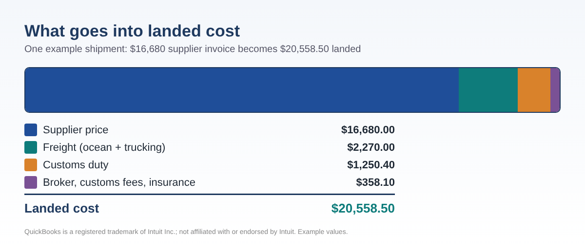
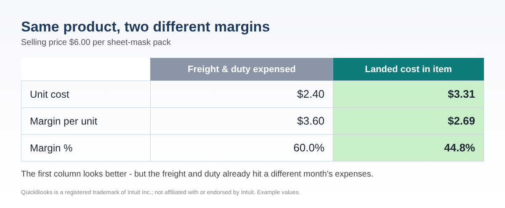
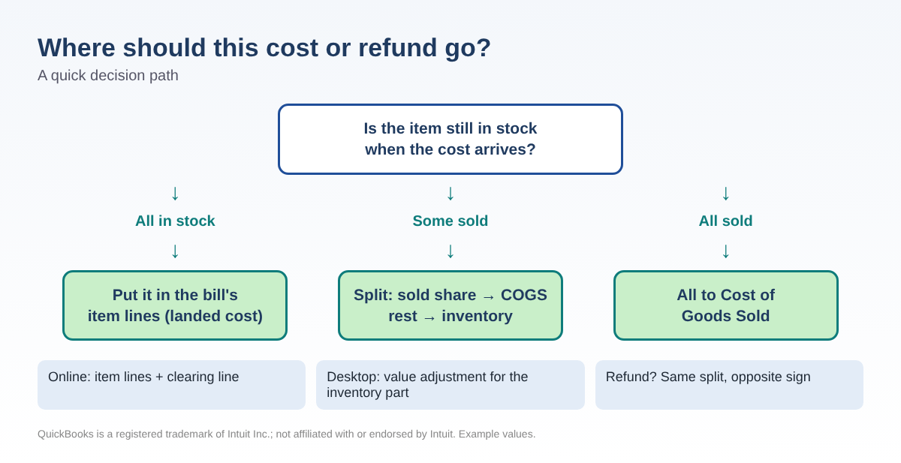

How to Add Freight, Duty and Tariffs to Inventory Cost in QuickBooks (and Record a Tariff Refund)
↓ Get the free Excel + PDF kit for this article
If you import what you sell - cosmetics from Korea, parts from overseas, packaged food, apparel - your supplier invoice is only part of the story. Ocean freight, customs duty, extra tariffs, broker fees and trucking can add 15-40% to what an item really costs. In QuickBooks those costs usually land in a freight or duty expense account, and the item keeps the supplier price.
That one habit quietly breaks three things: the month you pay freight looks like a loss, the month you sell looks too profitable, and your item cost is too low to set prices with. In 2026 there is a fourth problem - many importers are now receiving refunds of IEEPA tariffs and are not sure where that money goes. This guide shows how to fix all of it with QuickBooks Online or Desktop and a simple spreadsheet.

Why QuickBooks users get stuck
The question comes up again and again in the QuickBooks Community: how do I add the freight and customs on an import to the cost of each item? The answers are workarounds. QuickBooks Online Plus and Advanced track inventory but have no screen that spreads a freight bill across items. QuickBooks Desktop Enterprise has a landed-cost feature; Pro and Premier do not. And the extra costs usually arrive on different bills, from different vendors, weeks apart.
The good news: the math is simple, and once you have the numbers, entering them takes minutes.
Step 1: List every extra cost and pick how to split it
Gather the supplier invoice, the freight bill, the customs broker's invoice and the entry summary that shows duty. For each extra cost, choose a basis:
- Value (quantity × unit cost) - customs duty, tariffs, customs fees and insurance, because they are charged on value.
- Quantity - per-unit fees, or a broker fee when items are similar.
- Weight (quantity × kg per unit) - air freight and trucking.
- Volume (quantity × cubic meters per unit) - ocean freight, which is priced by space.
| Extra cost | Amount | Split by |
|---|---|---|
| Ocean freight (LCL) | $1,850.00 | Volume |
| Customs duty | $1,250.40 | Value |
| Broker fee | $225.00 | Quantity |
| Customs fees | $58.10 | Value |
| Cargo insurance | $75.00 | Value |
| Trucking, port to warehouse | $420.00 | Weight |
Example values. Total extra costs: $3,878.50.
Tip: if the entry summary lists duty for each line, use those exact amounts per item instead of splitting the total.
Step 2: Allocate with three spreadsheet formulas
Put one item per row with Qty in column B and unit cost in C. In Excel or Google Sheets:
- Basis (value):
=B2*C2- or=B2*D2if D holds kg per unit. - Share of a cost in cell $H$1:
=ROUND($H$1*E2/SUM($E$2:$E$6),2) - Landed unit cost:
=(B2*C2+F2)/B2, where F2 is the sum of all shares for that row.
Rounding can leave a cent or two over or under. Add the difference to the largest line so the total matches the bills exactly.
| SKU | Qty | Supplier unit | Goods value | Extra cost | Landed total | Landed unit |
|---|---|---|---|---|---|---|
| SERUM-30 | 1,200 | $3.1000 | $3,720.00 | $705.06 | $4,425.06 | $3.6876 |
| CREAM-50 | 800 | $4.2500 | $3,400.00 | $679.18 | $4,079.18 | $5.0990 |
| MASK-10P | 1,500 | $2.4000 | $3,600.00 | $1,368.22 | $4,968.22 | $3.3121 |
| TONER-150 | 600 | $3.6000 | $2,160.00 | $540.57 | $2,700.57 | $4.5010 |
| SUN-50 | 1,000 | $3.8000 | $3,800.00 | $585.47 | $4,385.47 | $4.3855 |
| Total | 5,100 | $16,680.00 | $3,878.50 | $20,558.50 |
Example values. Notice the sheet-mask pack rises 38% because it is bulky and heavy, while the sun cream rises 15%.

Step 3: Enter it in QuickBooks Online (clearing-account method)
This follows the workaround Intuit's community staff describe; the spreadsheet supplies the numbers.
- Create an account named Landed Cost Clearing (Settings ⚙ → Chart of accounts → New). Other Current Assets is a common type; use what your accountant prefers.
- Select + New → Bill and pick the supplier.
- In Item details, enter each product with its Qty and the landed total as the Amount.
- In Category details, choose Landed Cost Clearing and enter the total extra costs as a negative amount (-3,878.50 in the example). The bill total now equals the supplier invoice.
- Enter the freight, broker and duty bills as usual, but post them to Landed Cost Clearing instead of an expense account.
- Open the clearing account's register (Chart of accounts → View register). When the shipment is complete, it should show 0.00.
QuickBooks Online values inventory using FIFO, so later sales of these units use the landed cost from this bill.
Step 3 (Desktop): Pro, Premier and Enterprise
- Lists → Chart of Accounts → Account → New: create Landed Cost Clearing.
- Vendors → Enter Bills: on the Items tab enter each item at its landed total; on the Expenses tab enter Landed Cost Clearing as a negative amount.
- Post the freight, broker and duty bills to Landed Cost Clearing on the Expenses tab.
Desktop uses average cost, so the new landed cost blends with units already on hand - that is expected. QuickBooks Desktop Enterprise also has a built-in landed cost tool; the spreadsheet is still useful to plan and check the result.
Step 4: Costs that arrive late, and tariff refunds
Sometimes the freight bill shows up after half the shipment is sold - or a duty refund arrives months later. Split the amount by the share already sold:
- To Cost of Goods Sold:
=ROUND(Amount*Sold/Received,2) - To Inventory: Amount minus the COGS part.
| Example: $2,400 tariff refund | Amount |
|---|---|
| Units received / units sold | 1,000 / 650 |
| Reduce Cost of Goods Sold (65%) | $1,560.00 |
| Reduce Inventory Asset (35% still on hand) | $840.00 |
Example values.
The journal entry: debit Bank $2,400, credit Cost of Goods Sold $1,560, credit Inventory Asset $840. For a late extra cost, flip the sides and credit Accounts Payable or Bank. In QuickBooks Online a journal entry to Inventory Asset fixes the balance sheet but does not change an item's FIFO cost; if the original bill is in an open period, editing it may be cleaner - ask your accountant. In Desktop, use Vendors → Inventory Activities → Adjust Quantity/Value on Hand with the Total Value adjustment type for the inventory part.

Tariff refunds in 2026: the background
On February 20, 2026 the U.S. Supreme Court ruled in Learning Resources, Inc. v. Trump that IEEPA does not authorize tariffs. Customs and Border Protection set up a refund process in ACE called CAPE, and only the importer of record (or its customs broker) can file. The process has moved in phases and has been the subject of further court action, so check the current status with your customs broker or cbp.gov. Other tariffs, such as Section 232 and Section 301 duties, were not part of that ruling. For your books, the key point is simple: do not book the whole refund as other income if much of the shipment is still in inventory.
Common mistakes
- Posting freight and duty straight to expense while the goods sit on the shelf.
- Using one flat percentage for every item, even when sizes and weights differ.
- Counting duty twice - once per line and again in the total.
- Forgetting the negative clearing line, so the bill no longer matches the supplier invoice.
- Recording a tariff refund entirely as income.
- Typing full entry numbers or bank details into a shared spreadsheet.
FAQ
Does QuickBooks Online have a landed cost feature?
Not in Plus or Advanced as of this writing; Intuit's community staff point users to the bill and clearing-account workaround above or to inventory apps. QuickBooks Desktop Enterprise has one built in.
Which method should I use for ocean freight?
Volume usually matches how ocean freight is priced. If you do not know cubic meters per item, value is a reasonable fallback - just use the same rule every time.
What if the freight bill covers two shipments?
Split the bill between the shipments first (by value or volume), then allocate each part to its items.
Is a tariff refund taxable income?
It depends on how the duty was treated when you paid it. Ask your tax professional; this article covers bookkeeping only.
Checklist
- Collect supplier invoice, freight bill, broker invoice and entry summary.
- Pick Value, Quantity, Weight or Volume for each cost.
- Allocate; the total of the shares equals the total of the bills.
- Bill: item lines at landed totals + one negative clearing line.
- Freight, broker and duty bills posted to the clearing account; balance 0.00.
- Late cost or refund: split by units sold vs. on hand.
- Track tariff refund claims by entry until paid.
Disclaimer: This article is educational and is not tax, legal, accounting or customs advice. Rules, CBP procedures and QuickBooks menus change; confirm before you act. All numbers are examples. QuickBooks is a registered trademark of Intuit Inc.; not affiliated with or endorsed by Intuit.
You can download the ready-made Landed Cost & Tariff Refund Allocator 2026 for free in the Free kit download box below (Excel + PDF guide, no sign-up).
Sources
- Intuit QuickBooks Community: QBO 2023 How to apply import costs to inventory?
- Intuit QuickBooks Community: Booking several costs for same inventory item
- Intuit QuickBooks Community: Bill for inventory purchase which includes a freight-in cost
- Intuit QuickBooks Community: Import purchase and CIF allocation to inventory (2026)
- Intuit help: Calculate landed costs in QuickBooks Desktop Enterprise
- Intuit help: Inventory valuation methods (FIFO)
- Barclay Damon, Where the tariff refund process stands (July 21, 2026)
- Skadden, Tariff refund mechanism takes shape (March 24, 2026)
- Holland & Knight, IEEPA tariff refund update (June 15, 2026)
- U.S. Customs and Border Protection (check current refund guidance)
Free kit download
Tools to follow this article step by step. No sign-up needed.
- Step-by-step guide (PDF)Landed_Cost_Guide_2026_EN.pdf · 98 KB
- Excel workbook (.xlsx)Landed_Cost_Tariff_Refund_Allocator_2026_EN.xlsx · 31 KB
Free to use for yourself and your own business; please do not resell or redistribute. General information, not tax, legal or accounting advice; check every figure against your own records. QuickBooks is a trademark of Intuit Inc.; BIZLEX is not affiliated with Intuit.